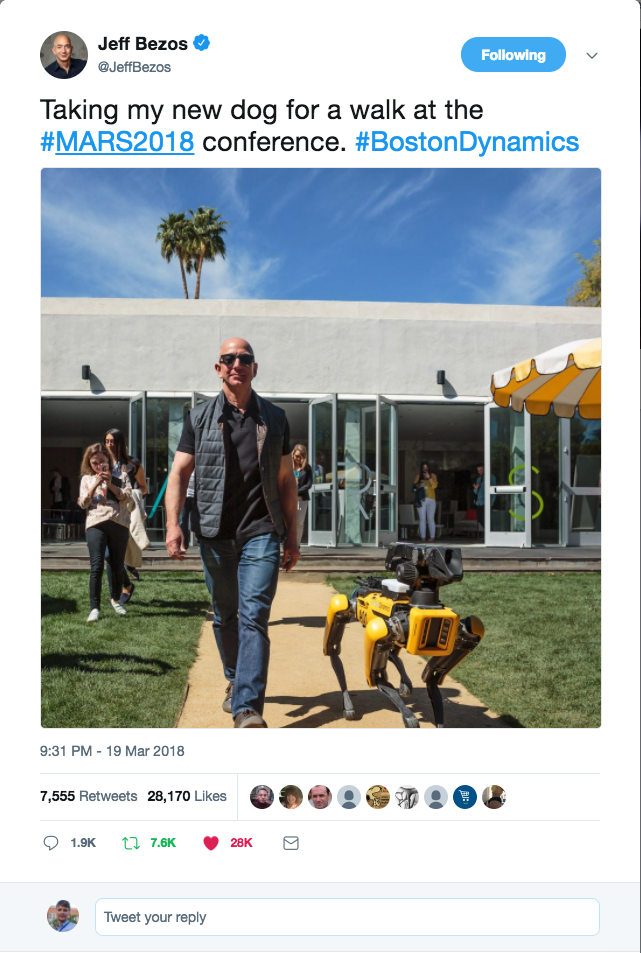
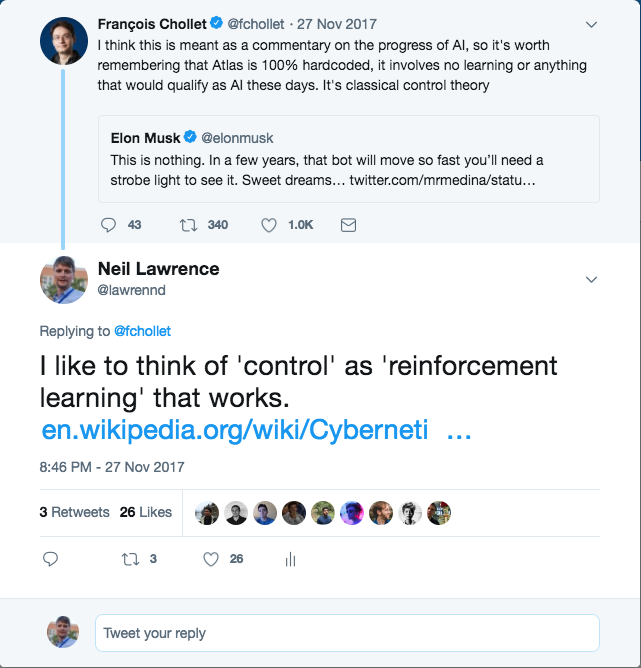
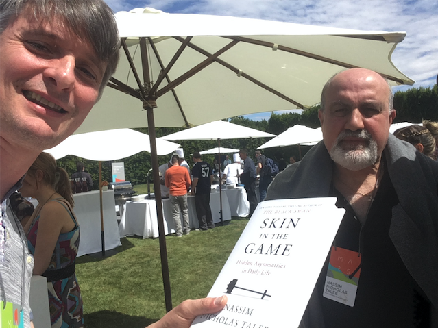

Story
- A man and his dog
Neil D. Lawrence
Poorly defined.
My definition: use of information to achieve goals more efficiently.
Efficiency is defined through use of less resource.
Automated decision making: we are continuing to progress well.
BBC 1, London, 14th September 1980
Series of three programmes investigating the so-called microelectronics revolution.
The promise (and perils) of silicon was broadly similar to that for AI today.
Doing things that humans do.
It’s a shifting definition.
Cybernetics: Control and Communication in the Animal and the Machine by Norbert Wiener (1948)
Ratio Club members include Alan Turing, Jack Good, Horace Barlow, Donald MacKay
Ideas came out of the Second World War.
Automatic computation for decryption of military codes (automated decision making) e.g. Jack Good and Alan Turing
Post-war potential for electronic emulation of what had up until then been the preserve of an animallian nervous system.

On Governors, James Clerk Maxwell 1868
How are we making computers do the things we used to associated only with humans?
Have we made a breakthrough in understanding human intelligence?
Or is it more “chess playing machines”




Successful deployments of intelligent systems are common.
But they are redefined to be non-intelligent.
My favourite example is Watt’s governor.
A hundred years ago computers were human beings.
Digital computers originally called automatic computers
Do we think of such a computer as intelligent?
Recent breakthroughs driven by machine learning.
So what are deep learning and machine leaning?
\[ \text{data} + \text{model} \rightarrow \text{prediction}\]
We scale by codifying processes and automating them.
Ensure components are compatible (Whitworth threads)
Then interconnect them as efficiently as possible.
cf Colt 45, Ford Model T
How does machine learning work?
Jumper (jersey/sweater) purchase with logistic regression
\[ \text{odds} = \frac{\text{bought}}{\text{not bought}} \]
\[ \log \text{odds} = \beta_0 + \beta_1 \text{age} + \beta_2 \text{latitude}\]
How does machine learning work?
Jumper (jersey/sweater) purchase with logistic regression
\[ p(\text{bought}) = {f}\left(\beta_0 + \beta_1 \text{age} + \beta_2 \text{latitude}\right)\]
How does machine learning work?
Jumper (jersey/sweater) purchase with logistic regression
\[ p(\text{bought}) = {f}\left(\boldsymbol{\beta}^\top {{\bf {x}}}\right)\]
We call \({f}(\cdot)\) the prediction function
\[{E}(\boldsymbol{\beta}, {\mathbf{Y}}, {{\bf X}})\]
\[{E}(\boldsymbol{\beta}) = \sum_{i=1}^{n}\left({y}_i - {f}({{\bf {x}}}_i)\right)^2\]
Prediction function, \({f}(\cdot)\)
Objective function, \({E}(\cdot)\)
These are interpretable models: vital for disease etc.
Modern machine learning methods are less interpretable
Example: face recognition
Outline of the DeepFace architecture. A front-end of a single convolution-pooling-convolution filtering on the rectified input, followed by three locally-connected layers and two fully-connected layers. Color illustrates feature maps produced at each layer. The net includes more than 120 million parameters, where more than 95% come from the local and fully connected.

Source: DeepFace

Challenges in deploying AI.
Currently this is in the form of “machine learning systems”
Fog computing: barrier between cloud and device blurring.
Complex feedback between algorithm and implementation
Major new challenge for systems designers.
Internet of Intelligence but currently:
They are componentwise built from ML Capabilities.
Each capability is independently constructed and verified.
Pedestrian detection
Road line detection
Important for verification purposes.
Whole systems are being deployed.
But they change their environment.
The experience evolved adversarial behaviour.


Stuxnet
Mischevious-Adversarial
There is a massive need for turn around and update
A redeploy of the entire system.
Interface between security engineering and machine learning.
A new name for system failures which aren’t bugs.
Difference between finding a fly in your soup vs a peppercorn in your soup.
Consider natural intelligence, or natural systems
Contrast between an artificial system and an natural system.
The key difference between the two is that artificial systems are designed whereas natural systems are evolved.
Survival of the fittest
?
Survival of the fittest
Herbet Spencer, 1864
Non-survival of the non-fit
Equate fitness for objective function.
Assume static environment and known objective.
Major component of all Engineering disciplines.
Details differ: there is a common theme: achieve your objective with the minimal use of resources to do the job.
This provides efficiency.
Engineering designer imagines a solution that requires the minimal set of components to achieve the result.
A water pump has one route through the pump.
First criterion of a natural intelligence is don’t fail.
In contrast, mantra for artificial systems is to be more efficient.
Artificial systems are given a single objective (in machine learning it is encoded in a mathematical function)
Aim to achieve that objective efficiently.
Even if we wanted to incorporate don’t fail in some form, it is difficult to design for.
To design for “don’t fail”, you have to consider every which way in which things can go wrong, if you miss one you fail. These cases are sometimes called corner cases.
In an uncontrolled environment, almost everything is a corner.
It is difficult to imagine everything that can happen.
Most of our automated systems operate in controlled environments (e.g. a factory, a set of rails.)

Need to move beyond pigeonholing tasks.
Need new approaches to both the design of the individual components, and the combination of components within our AI systems.
Joint work with M. Milo
Joint work with M. Milo
Need to deal with uncertainty and increase robustness.
Today, it is easy to make a fool of an artificial intelligent agent.
Technology needs to address the challenge of the uncertain environment to achieve robust intelligences.


|
|
|
|
|
|
bits/min |
billions |
2000 |
6 |
|
billion |
~100 |
a billion |
a billion |
|
embodiment |
20 minutes |
5 billion years |
15 trillion years |


For sale: baby shoes, never worn.
We are a long way from emulating human intelligence, animal intelligence, animal motion.
The objectives of cybernetics still have not been reached.
The robustness of natural systems is outside the scope of our current design methodologies.
There is something quintisential about the human experience.
We are co-evolved to view the world in a certain way to enable collaboration.
Our consciousness is a consequence of our limitations. Our locked-in intelligence.